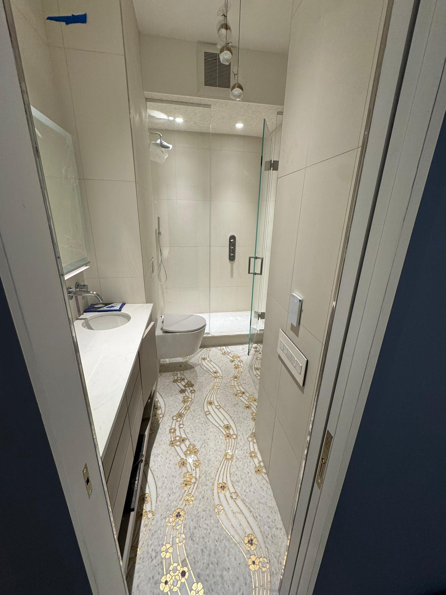
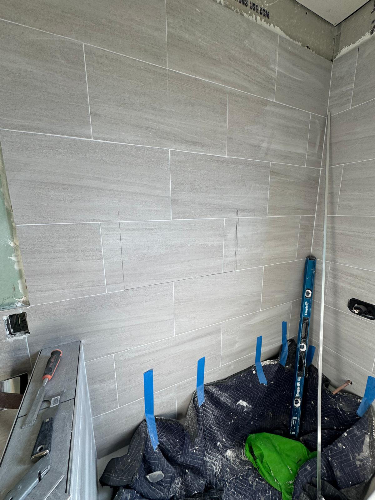
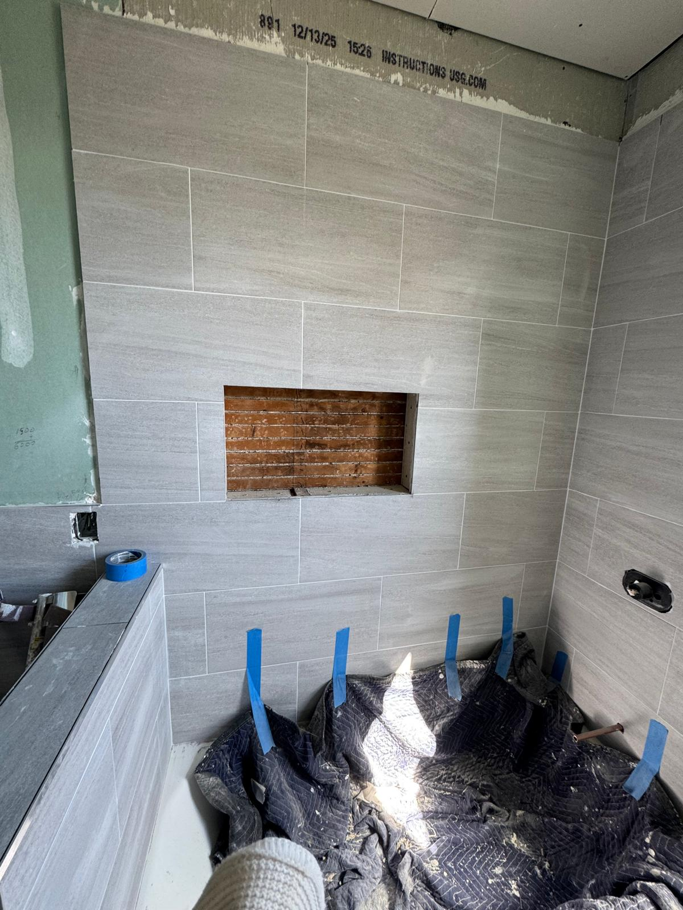
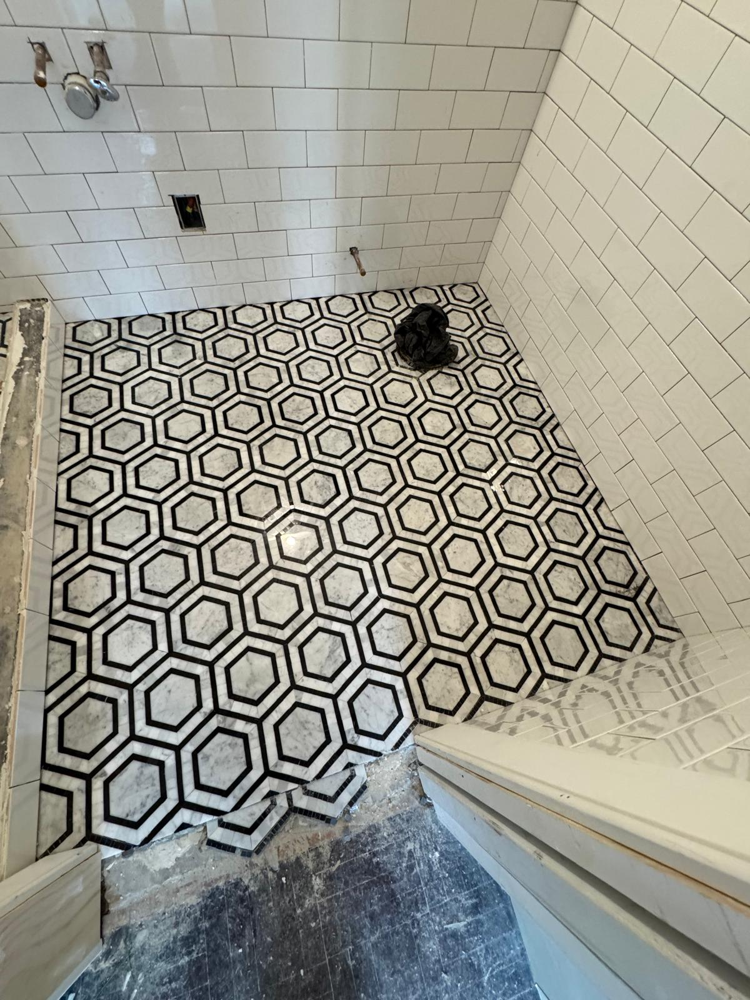
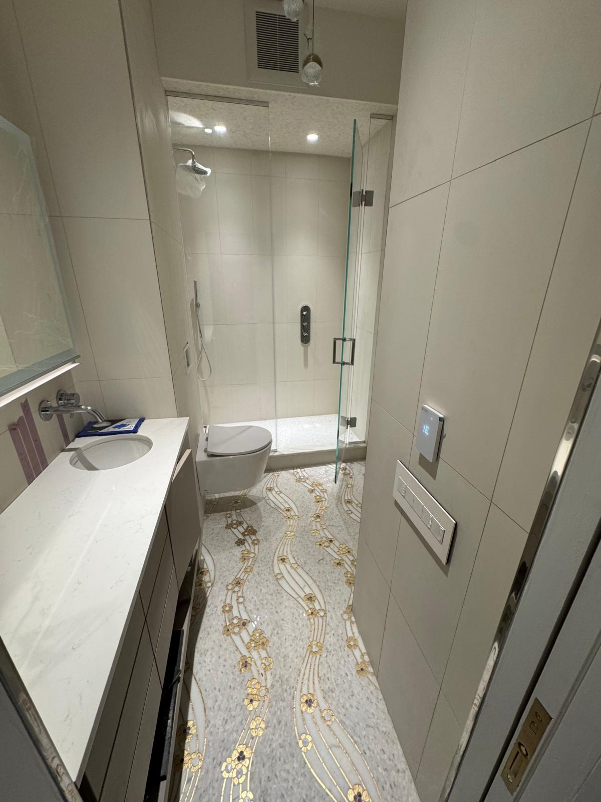

Bathroom Tile Ideas for Manhattan Apartments: Marble, Hex, and Large Format Styles
Spring is the season Manhattan homeowners turn their attention to renovation, and for good reason. Longer days, fresh energy, and the promise of a transformed home make April through June the most popular window for bathroom upgrades across the five boroughs. If you have been thinking about new bathroom tile installation in NYC, whether for a full gut renovation or a targeted refresh, this guide covers the styles working beautifully in Manhattan apartments right now.
Why Bathroom Tile Is the Foundation of Any Great Renovation
When Metro Glass Pro visits a project site, the tile discussion often comes first. Tile sets the tone for everything else: the color palette, the grout lines, the way light moves across the walls. Getting the tile right means the glass, fixtures, and finishes all have something cohesive to respond to.
In Manhattan apartments, whether you are in a prewar co op on the Upper West Side, a condo in Tribeca, or a brownstone in Brooklyn Heights, the tile choice also has to work within real constraints. Building rules, limited square footage, and plumbing configurations all factor into what is practical as well as beautiful.
The Most Popular Bathroom Tile Styles in Manhattan Right Now
Marble Tile: Timeless and Still the Top Choice
Marble tile remains the most requested material for luxury bathroom renovation across Manhattan. The appeal is clear: natural veining, a cool underfoot feel, and an elegance that reads refined without being showy. We see it most often in large slab format on shower walls, as a continuous floor to ceiling treatment, or paired with a contrasting floor tile for visual depth.
Calacatta and Carrara are the most common marble types, with Calacatta running slightly more dramatic in its veining. If budget is a consideration, high quality porcelain tile with a marble look has improved dramatically in recent years and is nearly indistinguishable in photographs. Some clients even prefer it for its lower maintenance requirements.

Large Format Tile: The Modern Minimalist Choice
Large format tile (24 by 24 inches and larger) has taken over many Manhattan bathrooms in the last three years. Fewer grout lines mean the eye travels farther without interruption, making a compact bathroom feel more open. It also means less grout maintenance over time, a practical advantage in any high use NYC apartment.
Metro Glass Pro has installed large format tile in both matte and polished finishes, on floors, walls, and in wet shower areas. The larger the tile, the more important the substrate preparation becomes. Floors need to be perfectly level; walls need proper blocking or backer board. This is where craftsmanship separates a great result from a mediocre one.

Hexagonal and Geometric Tile: Character for Floors and Accents
For clients who want something with more personality, hex tile and geometric patterns deliver. Classic white hex tile on bathroom floors is a perennial Manhattan choice. It fits naturally in prewar buildings where it looks historically appropriate, and reads just as well in modern renovations where the clean graphic quality shines.
Beyond the classic white hex, we are seeing more homeowners choose black and white patterns, Moroccan inspired shapes, and mixed material mosaics. These work best as floor accents or in shower niches, where they add visual interest without overwhelming a compact space.


Coordinating Tile with Glass and Fixtures
One of Metro Glass Pro's key advantages is that we handle both the tile work and the glass installation. That matters because the two are deeply connected visually. A frameless glass shower enclosure puts the tile fully on display with no frame to interrupt the view. When the tile is the star, the glass needs to disappear, and a well-fitted frameless door does exactly that.
We walk clients through these decisions together, helping them understand how the grout color, tile format, and glass profile will interact before any materials are ordered. The result is a bathroom that feels intentional from every angle.

Co Op and Condo Considerations for Tile Work in NYC
If you live in a co op or condominium in Manhattan, tile installation involves more than choosing a pattern. Most buildings require a certificate of insurance from your contractor, and many have rules about wet work, waterproofing standards, and permitted noise hours.
Metro Glass Pro is licensed and insured in New York, COI ready, and experienced in building coordination across Manhattan. We know how to submit the right documentation, communicate directly with building management, and schedule work within the hours your board requires. One missing document can delay a project by weeks. We make sure that does not happen.
Planning Your Bathroom Tile Budget in Manhattan
Bathroom tile installation in NYC ranges widely depending on material, layout complexity, and the extent of prep work required. Marble and natural stone cost more per square foot and require more careful handling than porcelain or ceramic. Patterns like herringbone or diagonal layouts call for more precise cuts and additional labor time.
The most reliable way to get an accurate picture of cost is to have a professional assess your space directly. Square footage alone does not tell the full story. The condition of the existing substrate, the height of the walls, and the complexity of the wet area all shape the final number. Metro Glass Pro provides free estimates, so there is no risk in starting that conversation early.
Bring Your Bathroom Tile Ideas to Life with Metro Glass Pro
Whether you are starting with a clear vision or just beginning to explore bathroom tile ideas for your Manhattan apartment, Metro Glass Pro is ready to help. We have served apartment owners, co op residents, condo boards, and brownstone renovators across all five boroughs and beyond, delivering precision tile work, custom glass, and full bathroom renovations.
From a simple floor retile to a complete gut renovation with frameless glass and custom marble, we bring the same level of care and craftsmanship to every project. If spring renovation season has you thinking about what your bathroom could become, now is the right time to reach out.
Get a Free Estimate
Ready to explore tile options for your Manhattan bathroom? Contact Metro Glass Pro today for a free, no obligation consultation.
✉ operations@metroglasspro.com
Available Monday through Friday, 8am to 6pm, and Saturday 9am to 2pm.